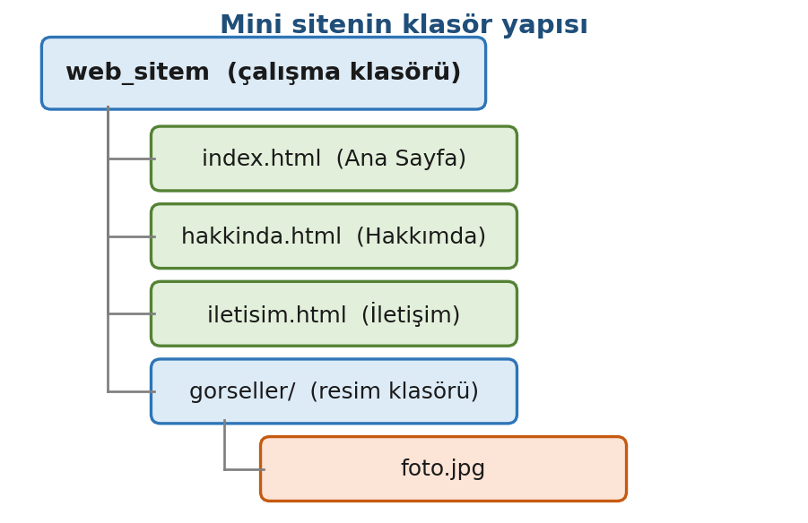
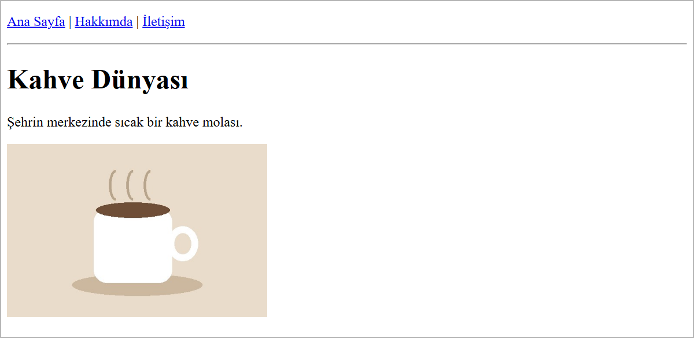

Bağlantılar ve Görseller
Bu sayfada
Bağlantı (link), tıklandığında başka bir sayfaya ya da dosyaya götüren metin veya görseldir; web'i "ağ" yapan, sayfaların bu bağlantılarla birbirine örülmüş olmasıdır. Sayfaya resim ise <img> etiketiyle eklenir. İkisinde de tarayıcıya dosyanın yerini yol (path) ile bildiririz: yol bir harf bile yanlış yazılırsa bağlantı açılmaz, resim görünmez.
1Bağlantı (Link) Nedir?
Bir bağlantı, tıklandığında başka bir sayfaya götüren metin ya da görseldir. Bağlantı <a> (anchor) etiketi ile oluşturulur. Gidilecek adres href özelliğine yazılır:
<a href="hakkinda.html">Hakkımda</a>
Burada:
href="hakkinda.html"→ tıklanınca gidilecek hedef.Hakkımda→ sayfada görünen tıklanabilir metin.
Tarayıcı, bağlantıları varsayılan olarak mavi ve altı çizili gösterir (daha önce tıklanmış bağlantılar mor görünür); böylece kullanıcı bunların tıklanabilir olduğunu anlar.
2Yol (Path): Göreli ve Mutlak (En Kritik Konu)
href (bağlantı) ve src (resim) değerinde, hedef dosyanın nerede olduğunu yazmanız gerekir. Yol iki türlüdür.
Mutlak yol: Hedefin tam adresidir. Genellikle başka bir web sitesine bağlanmak için kullanılır ve https:// ile başlar.
<a href="https://www.google.com">Google</a>
Göreli yol: Hedefin, o an bulunduğunuz dosyaya göre yerini belirtir. Kendi sitenizin içindeki sayfa ve resimler için bunu kullanırsınız. Aşağıdaki klasör yapısını örnek alalım:

Bu yapıya göre yollar şöyle yazılır:
| Hedef nerede? | Nasıl yazılır? | Örnek |
|---|---|---|
| Aynı klasörde | doğrudan dosya adı | hakkinda.html |
| Alt klasörde | klasör/dosya | gorseller/foto.jpg |
| Üst klasörde | ../dosya | gorseller içindeki bir sayfadan: ../index.html |
| Başka bir sitede | tam adres (mutlak) | https://www.google.com |
../ işareti "bir üst klasöre çık" demektir. Örneğin gorseller klasörünün içindeki bir sayfadan index.html'e bağlanmak için ../index.html yazılır. En sık yapılan hata, dosya adını yanlış yazmak veya yolun başına gereksiz / koymaktır. Dosya ve klasör adlarını (1. haftada, Araçlar ve İlk Web Sayfası konusunda görüldüğü gibi) Türkçe harf ve boşluk kullanmadan yazın.
3Bağlantı Türleri
Site içi bağlantı (göreli yol): Kendi sayfalarınız arasında geçiş için.
<a href="iletisim.html">İletişim</a>
Dış bağlantı (mutlak yol): Başka bir web sitesine gitmek için.
<a href="https://www.cu.edu.tr">Üniversite Sitesi</a>
Yeni sekmede açma: Bağlantının yeni bir sekmede açılması için target="_blank" eklenir. Dış bağlantılarda sık kullanılır.
<a href="https://www.google.com" target="_blank">Google (yeni sekme)</a>
4Görsel Ekleme: <img>
Sayfaya resim eklemek için <img> etiketi kullanılır. Bu, tek (kapanışsız) bir etikettir ve iki temel özelliği vardır:
<img src="gorseller/foto.jpg" alt="Kahve fincanı">
| Özellik | Görevi |
|---|---|
src | Resmin yolu (göreli veya mutlak). Resim kendi sitenizdeyse göreli yol yazılır. |
alt | Resim yüklenmezse görünecek alternatif metin. Ekran okuyucular ve arama motorları için de önemlidir. |
Boyut: Resmin genişliğini ve yüksekliğini width ve height ile ayarlayabilirsiniz. Yalnızca width verirseniz, resim oranını bozmadan ölçeklenir.
<img src="gorseller/foto.jpg" alt="Kahve fincanı" width="300">
İçerik taşıyan resimlerde alt metnini boş bırakmayın. Resim bir sebeple açılmazsa kullanıcı en azından ne olduğunu okuyabilir; görme engelli kullanıcılar için de bu metin sesli okunur.
5Resmi Bağlantı Hâline Getirme
Bir resmi, tıklanınca başka sayfaya götüren bir bağlantıya dönüştürmek için <img> etiketini <a> etiketinin içine yazarsınız.
<a href="index.html">
<img src="gorseller/logo.png" alt="Site logosu" width="120">
</a>
Bu yöntem, sitelerde logoya tıklayınca ana sayfaya dönme özelliği için sık kullanılır.
6Örnek: Üç Sayfalı Mini Site
Şimdi birbirine bağlı üç sayfalık küçük bir site hazırlayalım. Her sayfanın başında aynı menü (üç bağlantı) bulunacak; böylece sayfalar arasında gezinebileceksiniz.
index.html (Ana Sayfa):
<!DOCTYPE html>
<html lang="tr">
<head>
<meta charset="utf-8">
<title>Ana Sayfa</title>
</head>
<body>
<p>
<a href="index.html">Ana Sayfa</a> |
<a href="hakkinda.html">Hakkımda</a> |
<a href="iletisim.html">İletişim</a>
</p>
<hr>
<h1>Kahve Dünyası</h1>
<p>Şehrin merkezinde sıcak bir kahve molası.</p>
<img src="gorseller/foto.jpg" alt="Kahve fincanı" width="300">
</body>
</html>
Bu sayfanın tarayıcıdaki görünümü şöyledir:

hakkinda.html (Hakkımda):
<!DOCTYPE html>
<html lang="tr">
<head>
<meta charset="utf-8">
<title>Hakkımda</title>
</head>
<body>
<p>
<a href="index.html">Ana Sayfa</a> |
<a href="hakkinda.html">Hakkımda</a> |
<a href="iletisim.html">İletişim</a>
</p>
<hr>
<h1>Hakkımızda</h1>
<p>Amacımız kaliteli kahveyi uygun fiyata sunmaktır.</p>
</body>
</html>
iletisim.html (İletişim):
<!DOCTYPE html>
<html lang="tr">
<head>
<meta charset="utf-8">
<title>İletişim</title>
</head>
<body>
<p>
<a href="index.html">Ana Sayfa</a> |
<a href="hakkinda.html">Hakkımda</a> |
<a href="iletisim.html">İletişim</a>
</p>
<hr>
<h1>İletişim</h1>
<p>Adres: Merkez Mahallesi, Adana</p>
<p>Telefon: 0322 000 00 00</p>
<p>
Konumumuz için
<a href="https://www.google.com/maps" target="_blank">haritayı</a>
yeni sekmede açabilirsiniz.
</p>
</body>
</html>
Üç dosyayı da web_sitem klasörüne kaydedin. Menüdeki bağlantılara tıklayarak sayfalar arasında gezebilirsiniz. Menüdeki bağlantılar site içi (göreli) bağlantılardır; iletisim.html içindeki harita bağlantısı ise dış (mutlak) bağlantıdır.
7Sıkça Yapılan 5 Hata
| Hata | Sonuç | Çözüm |
|---|---|---|
Dosya adını yanlış yazmak (hakkında.html) | Bağlantı çalışmaz, sayfa açılmaz | Adı birebir aynı yazın; Türkçe harf kullanmayın |
| Resim yolunu yanlış yazmak | Resim yerine küçük bir kırık resim simgesi ve alt metni görünür | src'yi klasör yapısına göre yazın (gorseller/foto.jpg) |
| Üst klasöre çıkmayı unutmak | Alt klasördeki sayfadan bağlantı kopar | Üst klasör için ../ kullanın |
alt metnini boş bırakmak | Erişilebilirlik ve SEO zayıflar | Her resme anlamlı alt yazın |
href'i unutmak (<a>metin</a>) | Bağlantı tıklanamaz olur | <a> etiketine mutlaka href ekleyin |
8Bu Haftanın Özeti
- Bağlantı
<a href="hedef">metin</a>ile verilir; tarayıcı bağlantıyı mavi ve altı çizili gösterir. - Yol iki türlüdür: göreli (o an bulunduğunuz dosyaya göre) ve mutlak (tam adres,
https://ile başlar). - Göreli yol: aynı klasör → dosya adı, alt klasör →
klasör/dosya, üst klasör →../dosya. - Görsel
<img src="yol" alt="metin">ile eklenir.altmetni, resim açılmazsa görünür ve erişilebilirlik için önemlidir;widthile boyut ayarlanır. target="_blank"bağlantıyı yeni sekmede açar;<a>içine<img>koyarak resim bağlantı hâline getirilir.- En sık hata yanlış yol ya da dosya adıdır; adları birebir ve Türkçe harf kullanmadan yazın.
9Konu Sonu Testi
-
Bağlantının gideceği adres hangi özelliğe yazılır?
- a)
src - b)
alt - c)
href - d)
link
Cevabı göster
cHedef adreshrefözelliğine yazılır. - a)
-
../index.htmlyolundaki../ne anlama gelir?- a) Aynı klasördeki dosya
- b) Bir üst klasöre çık
- c) Alt klasöre gir
- d) İnternetteki bir site
Cevabı göster
b../bir üst klasöre çıkmayı belirtir. -
Resim yüklenemediğinde görünecek metni hangi özellik belirler?
- a)
src - b)
title - c)
alt - d)
href
Cevabı göster
calt, resim açılmazsa görünen alternatif metindir. - a)
-
Aşağıdakilerden hangisi mutlak (dış) bağlantı örneğidir?
- a)
hakkinda.html - b)
gorseller/foto.jpg - c)
../index.html - d)
https://www.google.com
Cevabı göster
dhttps://ile başlayan tam adres mutlak bağlantıdır; diğerleri göreli yoldur. - a)
-
Bir bağlantının yeni sekmede açılması için ne eklenir?
- a)
target="_blank" - b)
new="true" - c)
href="yeni" - d)
alt="_blank"
Cevabı göster
atarget="_blank"bağlantıyı yeni sekmede açar. - a)
10Uygulamalar
Görev: İki sayfalık bir site yapın: index.html ve urunler.html. Her iki sayfada da diğerine giden bir bağlantı bulunsun. Ana sayfaya bir görsel ekleyin.
Çözüm (index.html):
<!DOCTYPE html>
<html lang="tr">
<head>
<meta charset="utf-8">
<title>Ana Sayfa</title>
</head>
<body>
<h1>Çiçekçi Dükkânı</h1>
<p>Taze çiçekler, uygun fiyatlar.</p>
<img src="gorseller/cicek.jpg" alt="Renkli çiçekler" width="250">
<p><a href="urunler.html">Ürünlerimize göz atın</a></p>
</body>
</html>
Çözüm (urunler.html):
<!DOCTYPE html>
<html lang="tr">
<head>
<meta charset="utf-8">
<title>Ürünler</title>
</head>
<body>
<h1>Ürünlerimiz</h1>
<p>Gül, papatya ve lale çeşitlerimiz mevcuttur.</p>
<p><a href="index.html">Ana sayfaya dön</a></p>
</body>
</html>
Adımlar:
web_sitemklasöründe iki dosyayı oluşturun.gorsellerklasörüne bir resim koyup adınıcicek.jpgyapın (veyasrc'yi kendi resminizin adına göre değiştirin).- Go Live varsa Go Live ile, yoksa dosyayı tarayıcıda açarak bağlantıların iki sayfa arasında çalıştığını deneyin.
11Sınıf Uygulaması
Senaryo: Birbirine bağlı iki sayfalık, görselli küçük bir tanıtım sitesi kurun.
Yapılacaklar:
web_sitemklasöründeindex.htmlvehakkinda.htmladında iki sayfa oluşturun.- Her iki sayfanın başına aynı menüyü koyun:
index.htmlvehakkinda.html'e giden iki bağlantı (<a href="...">). gorsellerklasörüne bir resim koyun; ana sayfada bu resmi<img>ile gösterin vealtmetnini yazın.- Sayfalardan birine bir dış bağlantı (
https://...) ekleyin vetarget="_blank"ile yeni sekmede açılmasını sağlayın.
Beklenen sonuç: Menüden iki sayfa arasında geçiş yapabiliyorsunuz; ana sayfada resminiz görünüyor; dış bağlantı yeni sekmede açılıyor.
İpuçları: Resim yolunu klasör yapısına göre yazın (gorseller/resim.jpg). Dosya adlarında Türkçe harf kullanmayın; yol hatası en sık buradan çıkar.
12Notlar ve İpuçları
width, resmi yalnızca ekranda küçültür; dosyanın boyutu değişmez. Büyük bir fotoğraf küçük gösterilse de tamamı indirilir. Sayfaya koymadan önce resmin kendisini küçültün.- Çoğu sunucu büyük/küçük harfe duyarlıdır:
Foto.JPGilefoto.jpgfarklı dosyalardır. Kendi bilgisayarınızda çalışan bir resim ya da bağlantı, sunucuya yüklenince bu yüzden çalışmayabilir. Dosya adınısrcvehrefiçinde birebir aynı yazın. altmetni resmi anlatmalıdır:resim1değil,Kahve fincanı.
13Çalışma Soruları
index.htmlsayfasınahakkinda.html'e giden bir bağlantı ekleyin.- Sayfanıza kendi seçtiğiniz bir resmi
<img>ile ekleyipaltmetnini yazın. - Resmin genişliğini
width="200"yaparak boyutunu küçültün. - Bir dış siteye (
https://...)target="_blank"ile bağlantı verip yeni sekmede açıldığını gözlemleyin. gorsellerklasörünün içine bir HTML sayfası koyup oradan../index.htmlile ana sayfaya bağlantı verin;../olmadan çalışmadığını görün.- Bir resmi
<a>etiketi içine alarak tıklanabilir (bağlantılı) hâle getirin.
Kaynakça
- MDN: Creating links (İngilizce)
- MDN: HTML images (İngilizce)
Bu haftanın Sınıf Uygulaması sayfanın sonundadır. Önce konu anlatımını okuyun, sonra uygulamayı kendi bilgisayarınızda yapın.